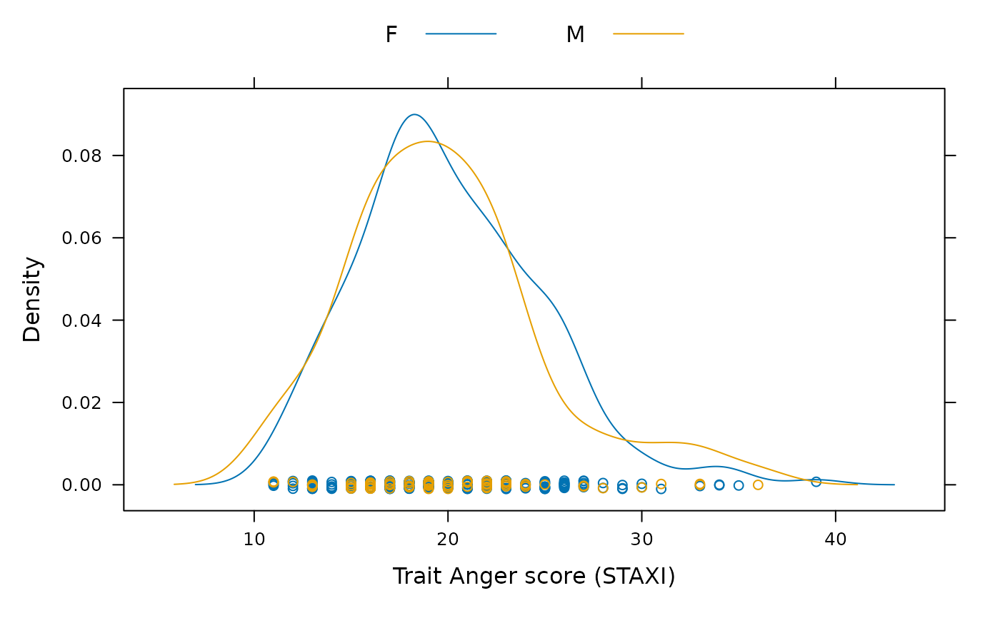

Verbal Aggression item responses
VerbAgg.RdThese are the item responses to a questionaire on verbal aggression. These data are used throughout De Boeck and Wilson (2004) to illustrate various forms of item response models.
Format
A data frame with 7584 observations on the following 13 variables.
Angerthe subject's Trait Anger score as measured on the State-Trait Anger Expression Inventory (STAXI)
Genderthe subject's gender - a factor with levels
MandFitemthe item on the questionaire, as a factor
respthe subject's response to the item - an ordered factor with levels
no<perhaps<yesidthe subject identifier, as a factor
btypebehavior type - a factor with levels
curse,scoldandshoutsitusituation type - a factor with levels
otherandselfindicating other-to-blame and self-to-blamemodebehavior mode - a factor with levels
wantanddor2dichotomous version of the response - a factor with levels
NandY
Source
Data originally from the UC Berkeley BEAR Center; original link is available at https://web.archive.org/web/20221128003829/https://old.bear.berkeley.edu/page/materials-explanatory-item-response-models, but the data are no longer accessible there.
Examples
str(VerbAgg)
#> 'data.frame': 7584 obs. of 9 variables:
#> $ Anger : int 20 11 17 21 17 21 39 21 24 16 ...
#> $ Gender: Factor w/ 2 levels "F","M": 2 2 1 1 1 1 1 1 1 1 ...
#> $ item : Factor w/ 24 levels "S1WantCurse",..: 1 1 1 1 1 1 1 1 1 1 ...
#> $ resp : Ord.factor w/ 3 levels "no"<"perhaps"<..: 1 1 2 2 2 3 3 1 1 3 ...
#> $ id : Factor w/ 316 levels "1","2","3","4",..: 1 2 3 4 5 6 7 8 9 10 ...
#> $ btype : Factor w/ 3 levels "curse","scold",..: 1 1 1 1 1 1 1 1 1 1 ...
#> $ situ : Factor w/ 2 levels "other","self": 1 1 1 1 1 1 1 1 1 1 ...
#> $ mode : Factor w/ 2 levels "want","do": 1 1 1 1 1 1 1 1 1 1 ...
#> $ r2 : Factor w/ 2 levels "N","Y": 1 1 2 2 2 2 2 1 1 2 ...
## Show how r2 := h(resp) is defined:
with(VerbAgg, stopifnot( identical(r2, {
r <- factor(resp, ordered=FALSE); levels(r) <- c("N","Y","Y"); r})))
xtabs(~ item + resp, VerbAgg)
#> resp
#> item no perhaps yes
#> S1WantCurse 91 95 130
#> S1WantScold 126 86 104
#> S1WantShout 154 99 63
#> S2WantCurse 67 112 137
#> S2WantScold 118 93 105
#> S2WantShout 158 84 74
#> S3WantCurse 128 120 68
#> S3WantScold 198 90 28
#> S3WantShout 240 63 13
#> S4wantCurse 98 127 91
#> S4WantScold 179 88 49
#> S4WantShout 217 64 35
#> S1DoCurse 91 108 117
#> S1DoScold 136 97 83
#> S1DoShout 208 68 40
#> S2DoCurse 109 97 110
#> S2DoScold 162 92 62
#> S2DoShout 238 53 25
#> S3DoCurse 171 108 37
#> S3DoScold 239 61 16
#> S3DoShout 287 25 4
#> S4DoCurse 118 117 81
#> S4DoScold 181 91 44
#> S4DoShout 259 43 14
xtabs(~ btype + resp, VerbAgg)
#> resp
#> btype no perhaps yes
#> curse 873 884 771
#> scold 1339 698 491
#> shout 1761 499 268
round(100 * ftable(prop.table(xtabs(~ situ + mode + resp, VerbAgg), 1:2), 1))
#> resp no perhaps yes
#> situ mode
#> other want 38 30 32
#> do 50 27 23
#> self want 56 29 15
#> do 66 23 10
person <- unique(subset(VerbAgg, select = c(id, Gender, Anger)))
require(lattice)
densityplot(~ Anger, person, groups = Gender, auto.key = list(columns = 2),
xlab = "Trait Anger score (STAXI)")

if(lme4:::testLevel() >= 3) { ## takes about 15 sec
print(fmVA <- glmer(r2 ~ (Anger + Gender + btype + situ)^2 +
(1|id) + (1|item), family = binomial, data =
VerbAgg), corr=FALSE)
} ## testLevel() >= 3
if (interactive()) {
## much faster but less accurate
print(fmVA0 <- glmer(r2 ~ (Anger + Gender + btype + situ)^2 +
(1|id) + (1|item), family = binomial,
data = VerbAgg, nAGQ=0L), corr=FALSE)
} ## interactive()